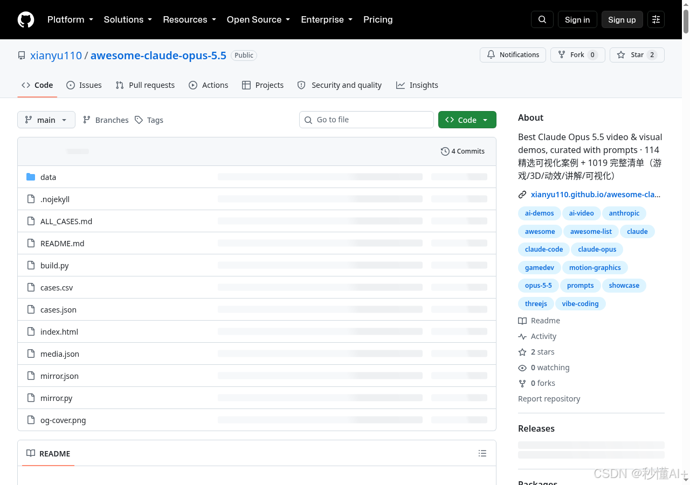
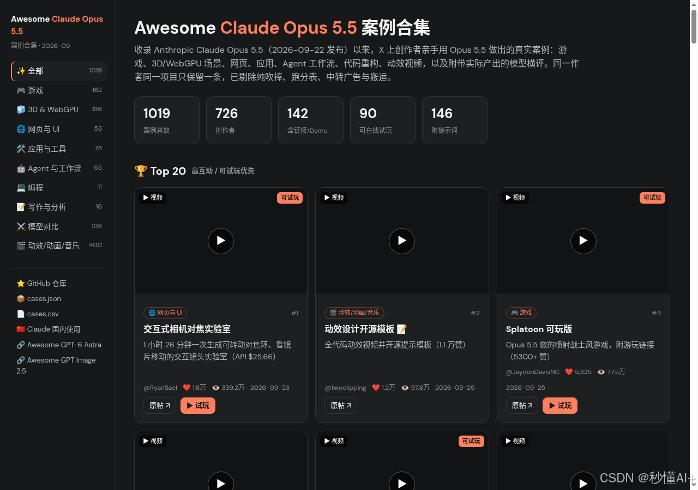

Claude Opus 5.5 最强可视化案例合集：114 精选 + 1000+ 完整清单（含提示词）
最近刷 X，Claude Opus 5.5 做出的游戏、3D、动效、讲解动画一波接一波——但帖子散落各处，想复现还得自己翻提示词。
xianyu110/awesome-claude-opus-5.5 把这件事做成了：
- 114 个精选案例 （游戏 / 动效 / Three.js / Blender / 讲解 / 可视化 / Agent 工作流等）
- 1019 条完整清单 （原始抓取一条不少）
- 能找到的 提示词一并收录
- 还有 在线画廊 ：可搜索、按分类筛选、直接播视频
🌐 在线画廊：https://xianyu110.github.io/awesome-claude-opus-5.5/
📦 GitHub：https://github.com/xianyu110/awesome-claude-opus-5.5

里面有什么硬货
按互动数据（点赞+收藏+转发）筛过，同作者最多 2 条，偏视频/动图。举几个顶流：
| 类型 | 案例 | 互动量级 |
|---|---|---|
| 交互可视化 | 交互式相机对焦实验室 | ❤ 1.6万+ |
| 动效 | 动效设计开源模板（附完整提示词） | ❤ 1.2万+ |
| 同题对比 | 五模型 3D 打印桥梁 | ❤ 8.4k |
| 游戏 | Splatoon 可玩版 / 电车难题游戏 / 塞尔达风 | ❤ 5k 级 |
| Agent | Rust→汇编 17× 加速、强制开工 ToDo、12 台电脑协同发布片 | ❤ 4k–5k |
分类覆盖：游戏、动效宣传片、Three.js/WebGPU、Blender/UE/Godot、讲解动画、交互模拟、网页 UI、音乐 MV、Apps & Agent、模型同题对比。

怎么用
- 打开仓库或在线画廊，按兴趣点进条目（原帖 / Demo / 提示词）。
- 复制提示词到 Claude Opus 5.5（Claude Code / App / 任意接入）。
- 动效/讲解类建议要求：单 HTML + 时间轴渲染 + ffmpeg 导出；游戏/3D 多轮迭代很正常。
仓库里还单独整理了「附提示词」章节，例如动效开源模板、Transformer 讲解、《大气环流》地理动画等，可直接抄作业。
一句话
想看 Opus 5.5 到底能做出什么 ，别再大海捞针刷时间线了——先收藏这个清单，按分类刷完 114 精选，再按需翻完整 1000+。
GitHub：https://github.com/xianyu110/awesome-claude-opus-5.5
画廊：https://xianyu110.github.io/awesome-claude-opus-5.5/
（转载请注明来源仓库；案例版权归原作者，条目均链回原帖。）